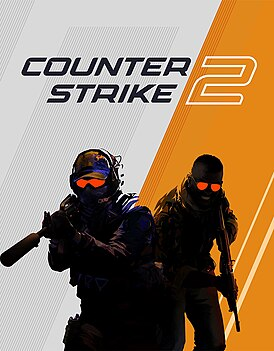

Вводная информация
27 сентября Valve выпустила финальную версию Counter-Strike 2 после нескольких месяцев бета-тестирования.
Главное изменение — внедрение движка Source 2.0. Он улучшил графику игры, а еще подтолкнул дизайнеров переработать некоторые карты. Из других нововведений — полностью переработанные дымовые гранаты и обновленные визуальные эффекты окружения. Систему засчитывания действий на сервере тоже улучшили: теперь выстрелы и движения регистрируются мгновенно.